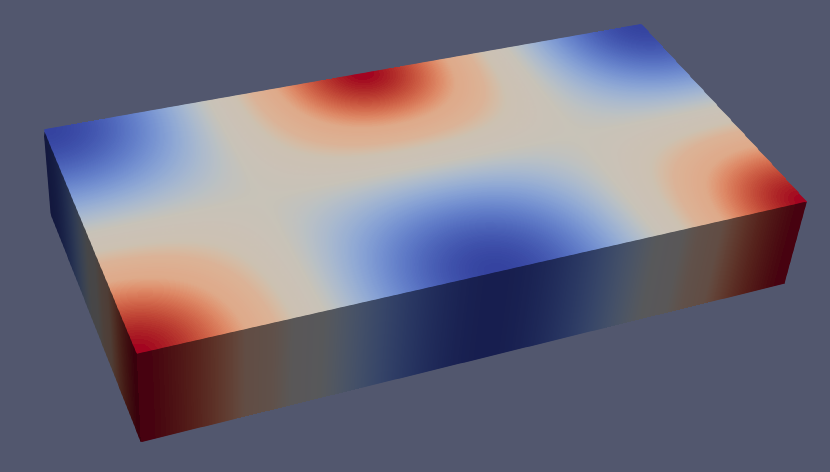
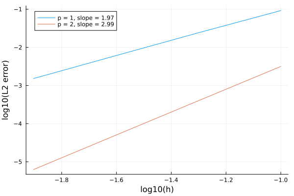

28-29th, November, 2023 | Australian National University, Canberra
In this tutorial, we will learn
How to solve a simple PDE in Julia with Gridap
How to build a conforming scalar Lagrangian FE space
How to define the different terms in a weak form
How to impose Dirichlet and Neumann boundary conditions
How to visualize results
How to compute and plot convergence rates
In this first tutorial, we provide an overview of a complete simulation pipeline in Gridap: from the construction of the FE mesh to the visualization of the computed results. To this end, we consider a simple model problem: the Poisson equation.
We want to solve the Poisson equation on the 3D cartesian domain with Dirichlet and Neumann boundary conditions. Dirichlet boundary conditions are applied on , i.e the bottom and top boundaries. Non-homogeneous Neumann conditions are applied everywhere else, i.e .
Formally, the problem to solve is: find the scalar field such that
being the outwards unit normal vector to the Neumann boundary . In this tutorial, we will try to recover an analytical solution and analyze the convergence rates of our numerical approximation.
To solve this PDE, we use a conventional Galerkin finite element (FE) method with conforming Lagrangian FE spaces (see, e.g., [1] for specific details on this formulation). The weak form associated with this formulation is: find such that for all , where and are the subset of functions in that fulfill the Dirichlet boundary condition and respectively. The bilinear and linear forms for this problems are
The problem is solved numerically by approximating the spaces and by their discrete counterparts associated with a FE mesh of the computational domain . As we have anticipated, we consider standard conforming Lagrangian FE spaces for this purpose.
The implementation of this numerical scheme in Gridap is done in a user-friendly way thanks to the abstractions provided by the library. As it will be seen below, all the mathematical objects involved in the definition of the discrete weak problem have a correspondent representation in the code.
The step number 0 in order to solve the problem is to load the Gridap library in the code. If you have configured your Julia environment properly, it is simply done with the line:
using Gridap
using DrWatsonWe define the analytical solution we will try to retrieve as follows
u(x) = cos(x[1])*sin(x[2]+π)As in any FE simulation, we need a discretization of the computational domain (i.e., a FE mesh). All geometrical data needed for solving a FE problem is provided in Gridap by types inheriting from the abstract type DiscreteModel. In our particular case, we will create a CartesianDiscreteModel of the computational domain with a resolution
domain = (-π,π,-π/2,π/2,0,1)
nC = (100,40,5)
model = CartesianDiscreteModel(domain,nC)By construction, a CartesianDiscreteModel associates with labels every vertex, edge and facet of the model to its parent corner, edge, facet or interior of the grid's bounding box. Label numbering follows the increasing lexicographic order.
We use this default order to set up the BCs as follows. For convenience, we create two new boundary tags, namely "dirichlet" and "newmann".
Gridap provides a convenient way to create new object identifiers (referred to as "tags") from existing ones. First, we need to extract from the model, the object that holds the information about the boundary identifiers (referred to as FaceLabeling):
labels = get_face_labeling(model)Then, we can add new identifiers (aka "tags") to it. In the next line, we create new tags called "dirichlet" and "newmann" combining the default labels of the model to represent and respectively.
add_tag_from_tags!(labels,"dirichlet",["tag_21","tag_22"])
add_tag_from_tags!(labels,"newmann",["tag_23","tag_24","tag_25","tag_26"])Note the usage of add_tag_from_tags! to construct new boundary tags gathering lower-level tags.
order = 1
reffe = ReferenceFE(lagrangian,Float64,order)
V = TestFESpace(model,reffe;conformity=:H1,dirichlet_tags="dirichlet")Here, we have used the TestFESpace constructor, which constructs a particular FE space (to be used as a test space) from a set of options described as positional and key-word arguments. The first positional argument is the model on top of which we want to build the space. The second positional argument contains information about the type of FE interpolation (the reference FE in this case). With ReferenceFE(lagrangian,Float64,order) We select a scalar-valued Lagrangian reference FE of order 1, where the value of the shape functions will be represented with 64-bit floating point numbers. With the key-word argument conformity we define the regularity of the interpolation at the boundaries of the cells in the mesh. Here, we use conformity=:H1, which means that the resulting interpolation space is a subset of (i.e., continuous shape functions). On the other hand, we pass the identifiers of the Dirichlet boundary via the dirichlet_tags argument. Since this is a test space, the corresponding shape functions vanishes at the Dirichlet boundary.
Once the space is discretized in the code, we proceed with the approximation of the trial space .
g(x) = u(x)
U = TrialFESpace(V,g)To this end, we have used the TrialFESpace constructors. Note that we have passed a function representing the value of the Dirichlet boundary condition, when building the trial space (here our analytical solution).
Once we have built the interpolation spaces, the next step is to set up the machinery to perform the integrals in the weak form numerically. Here, we need to compute integrals on the interior of the domain and on the Neumann boundary . In both cases, we need two main ingredients. We need to define an integration mesh (i.e. a triangulation of the integration domain), plus a Gauss-like quadrature in each of the cells in the triangulation. In Gridap, integration meshes are represented by types inheriting from the abstract type Triangulation. For integrating on the domain , we build the following triangulation and the corresponding Lebesgue measure, which will allow to write down integrals in a syntax similar to the usual mathematical notation.
degree = order*2
Ω = Triangulation(model)
dΩ = Measure(Ω,degree)Here, we build a triangulation from the cells of the model and build (an approximation of) the Lebesgue measure using a quadrature rule of degree 2 in the cells of this triangulation. This is enough for integrating the corresponding terms of the weak form exactly for an interpolation of order 1.
On the other hand, we need a special type of triangulation, represented by the type BoundaryTriangulation, to integrate on the boundary. Essentially, a BoundaryTriangulation is a particular type of Triangulation that is aware of which cells in the model are touched by faces on the boundary. We build an instance of this type from the discrete model and the names used to identify the Neumann boundary as follows:
Γ = BoundaryTriangulation(model,tags="newmann")
dΓ = Measure(Γ,degree)In addition, we have created a quadrature of degree 2 on top of the cells in the triangulation for the Neumann boundary.
In order to impose our Newmann boundary conditions, we will need to compute the normal vector to the boundary. This is done with the function get_normal_vector:
n_Γ = get_normal_vector(Γ)With all the ingredients presented so far, we are ready to define the weak form. This is done by defining functions representing the bi-linear and linear forms:
f(x) = -Δ(u)(x)
∇u(x) = ∇(u)(x)
a(u,v) = ∫( ∇(v)⋅∇(u) )*dΩ
l(v) = ∫( v*f )*dΩ + ∫( v*(∇u⋅n_Γ) )*dΓNote that by using the integral function ∫, the Lebesgue measures dΩ, dΓ, and the gradient function ∇, the weak form is written with an obvious relation with the corresponding mathematical notation.
At this point, we can build the FE problem that, once solved, will provide the numerical solution we are looking for. A FE problem is represented in Gridap by types inheriting from the abstract type FEOperator (both for linear and nonlinear cases). Since we want to solve a linear problem, we use the concrete type AffineFEOperator, i.e., a problem represented by a matrix and a right hand side vector.
op = AffineFEOperator(a,l,U,V)Note that the AffineFEOperator object representing our FE problem is built from the function a and l representing the weak form and test and trial FE spaces V and U.
We can also retrieve the matrix and the right hand side vector of the problem as follows:
A = get_matrix(op)
b = get_vector(op)We have constructed a FE problem, the last step is to solve it. In Gridap, FE problems are solved with types inheriting from the abstract type FESolver. Since this is a linear problem, we use a LinearFESolver:
ls = LUSolver()
solver = LinearFESolver(ls)LinearFESolver objects are built from a given algebraic linear solver. In this case, we use a LU factorization. Now we are ready to solve the FE problem with the FE solver as follows:
uh = solve(solver,op)The solve function returns the computed numerical solution uh. This object is an instance of FEFunction, the type used to represent a function in a FE space. FEFunction is part of the CellField abstract type, which are objects that represent fields over a triangulated domain. We can inspect the result by writing it into a vtk file:
writevtk(Ω,datadir("poisson_sol"),cellfields=["uh"=>uh])which will generate a file named poisson_sol.vtu having a nodal field named "uh" containing the solution of our problem (see next figure).

Additionaly, we can compute the L2 error of the numerical solution as follows:
e = uh - u
l2_error = sum(∫(e⋅e)*dΩ)One of the advantages of having an analytical solution is that we can compute the convergence rates of our numerical approximation. The first step is to define a driver by putting together all the steps described above. The driver takes two arguments: the number of cells in the and direction, , and the order of the finite-element interpolation, . It returns the L2 error of the numerical solution.
function driver(n,order)
domain = (-π,π,-π/2,π/2,0,1)
nC = (n,n,1)
model = CartesianDiscreteModel(domain,nC)
labels = get_face_labeling(model)
add_tag_from_tags!(labels,"dirichlet",["tag_21","tag_22"])
add_tag_from_tags!(labels,"newmann",["tag_23","tag_24","tag_25","tag_26"])
reffe = ReferenceFE(lagrangian,Float64,order)
V = TestFESpace(model,reffe;conformity=:H1,dirichlet_tags="dirichlet")
U = TrialFESpace(V,u)
degree = order*2+1
Ω = Triangulation(model)
dΩ = Measure(Ω,degree)
Γ = BoundaryTriangulation(model,tags="newmann")
dΓ = Measure(Γ,degree)
n_Γ = get_normal_vector(Γ)
f(x) = -Δ(u)(x)
∇u(x) = ∇(u)(x)
a(u,v) = ∫( ∇(v)⋅∇(u) )*dΩ
l(v) = ∫( v*f )*dΩ + ∫( v*(∇u⋅n_Γ) )*dΓ
op = AffineFEOperator(a,l,U,V)
ls = LUSolver()
solver = LinearFESolver(ls)
uh = solve(solver,op)
e = uh - u
return sum(∫(e⋅e)*dΩ)
endWe then run the driver for different values of and , saving the values of the L2 error for each configuration.
order_vec = [1,2]
n_vec = [10,20,40,80]
h_vec = map(n -> (2π/n)*(π/n)*(0.5), n_vec)
error = zeros((length(order_vec),length(n_vec)))
for (i,order) in enumerate(order_vec)
for (j,n) in enumerate(n_vec)
error[i,j] = driver(n,order)
end
endFinally, we plot the results and compute the convergence rates.
using Plots
plt = plot(xlabel="log10(h)",ylabel="log10(L2 error)",grid=true)
for (i,e) in enumerate(eachrow(error))
order = order_vec[i]
dx = log10(h_vec[1]) - log10(h_vec[end])
dy = log10(e[1]) - log10(e[end])
slope = string(dy/dx)[1:4]
plot!(plt,log10.(h_vec),log10.(e),label="p = $(order), slope = $(slope)")
end
@show pltThe resulting plot is shown in the next figure:

As expected, we observe a convergence rate of order .